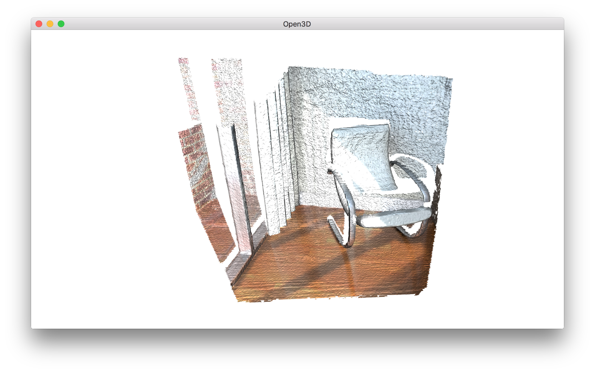

RGBD integration¶
Open3D implements a scalable RGBD image integration algorithm. The algorithm is based on the technique presented in [Curless1996] and [Newcombe2011]. In order to support large scenes, we use a hierarchical hashing structure introduced in Integrater in ElasticReconstruction.
5 6 7 8 9 10 11 12 13 14 15 16 17 18 19 20 21 22 23 24 25 26 27 28 29 30 31 32 33 34 35 | # examples/Python/Advanced/rgbd_integration.py
import open3d as o3d
from trajectory_io import *
import numpy as np
if __name__ == "__main__":
camera_poses = read_trajectory("../../TestData/RGBD/odometry.log")
volume = o3d.integration.ScalableTSDFVolume(
voxel_length=4.0 / 512.0,
sdf_trunc=0.04,
color_type=o3d.integration.TSDFVolumeColorType.RGB8)
for i in range(len(camera_poses)):
print("Integrate {:d}-th image into the volume.".format(i))
color = o3d.io.read_image(
"../../TestData/RGBD/color/{:05d}.jpg".format(i))
depth = o3d.io.read_image(
"../../TestData/RGBD/depth/{:05d}.png".format(i))
rgbd = o3d.geometry.RGBDImage.create_from_color_and_depth(
color, depth, depth_trunc=4.0, convert_rgb_to_intensity=False)
volume.integrate(
rgbd,
o3d.camera.PinholeCameraIntrinsic(
o3d.camera.PinholeCameraIntrinsicParameters.PrimeSenseDefault),
np.linalg.inv(camera_poses[i].pose))
print("Extract a triangle mesh from the volume and visualize it.")
mesh = volume.extract_triangle_mesh()
mesh.compute_vertex_normals()
o3d.visualization.draw_geometries([mesh])
|
Read trajectory from .log file¶
12 | camera_poses = read_trajectory("../../TestData/RGBD/odometry.log")
|
This tutorial uses function read_trajectory to read a camera trajectory from a .log file. A sample .log file is as follows.
# examples/TestData/RGBD/odometry.log
0 0 1
1 0 0 2
0 1 0 2
0 0 1 -0.3
0 0 0 1
1 1 2
0.999988 3.08668e-005 0.0049181 1.99962
-8.84184e-005 0.999932 0.0117022 1.97704
-0.0049174 -0.0117024 0.999919 -0.300486
0 0 0 1
:
TSDF volume integration¶
13 14 15 16 17 18 19 20 21 22 23 24 25 26 27 28 29 30 | volume = o3d.integration.ScalableTSDFVolume(
voxel_length=4.0 / 512.0,
sdf_trunc=0.04,
color_type=o3d.integration.TSDFVolumeColorType.RGB8)
for i in range(len(camera_poses)):
print("Integrate {:d}-th image into the volume.".format(i))
color = o3d.io.read_image(
"../../TestData/RGBD/color/{:05d}.jpg".format(i))
depth = o3d.io.read_image(
"../../TestData/RGBD/depth/{:05d}.png".format(i))
rgbd = o3d.geometry.RGBDImage.create_from_color_and_depth(
color, depth, depth_trunc=4.0, convert_rgb_to_intensity=False)
volume.integrate(
rgbd,
o3d.camera.PinholeCameraIntrinsic(
o3d.camera.PinholeCameraIntrinsicParameters.PrimeSenseDefault),
np.linalg.inv(camera_poses[i].pose))
|
Open3D provides two types of TSDF volumes: UniformTSDFVolume and ScalableTSDFVolume. The latter is recommended since it uses a hierarchical structure and thus supports larger scenes.
ScalableTSDFVolume has several parameters. voxel_length = 4.0 / 512.0 means a single voxel size for TSDF volume is \(\frac{4.0m}{512.0} = 7.8125mm\). Lowering this value makes a high-resolution TSDF volume, but the integration result can be susceptible to depth noise. sdf_trunc = 0.04 specifies truncation value for signed distance function (SDF). When color_type = TSDFVolumeColorType.RGB8, 8 bit RGB color is also integrated as part of the TSDF volume. Float type intensity can be integrated with color_type = TSDFVolumeColorType.Gray32 and convert_rgb_to_intensity = True. The color integration is inspired by PCL.
Extract a mesh¶
Mesh extraction uses the marching cubes algorithm [LorensenAndCline1987].
32 33 34 35 | print("Extract a triangle mesh from the volume and visualize it.")
mesh = volume.extract_triangle_mesh()
mesh.compute_vertex_normals()
o3d.visualization.draw_geometries([mesh])
|
Outputs:
{kind=link}
Note
TSDF volume works like weighted average filter in 3D space. If more frames are integrated, the volume produces smoother and nicer mesh. Please check Make fragments for more examples.